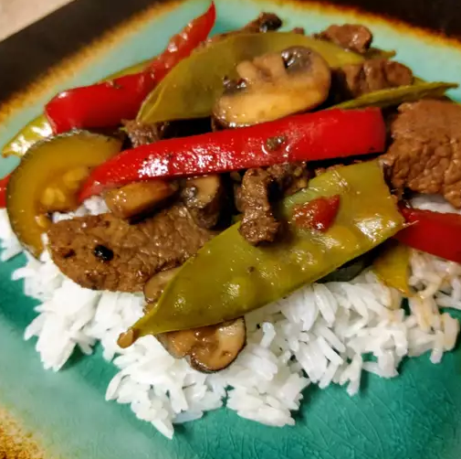

Asian Beef with Snow Peas

Asian Beef with Snow Peas Recipe
Stir-fried beef in a light gingery sauce. Serve over steamed rice or
hot egg noodles.
Ingredients
- 3 tablespoons soy sauce
- 2 tablespoons rice wine
- 1 tablespoon brown sugar
- ½ teaspoon cornstarch
- 1 tablespoon vegetable oil
- 1 tablespoon minced fresh ginger root
- 1 tablespoon minced garlic
- 1 pound beef round steak, cut into thin strips
- 8 ounces snow peas
Directions
- In a small bowl, combine the soy sauce, rice wine, brown sugar
and cornstarch. Set aside.
- Heat oil in a wok or skillet over medium high heat. Stir-fry
ginger and garlic for 30 seconds. Add the steak and stir-fry
for 2 minutes or until evenly browned. Add the snow peas and
stir-fry for an additional 3 minutes. Add the soy sauce mixture,
bring to a boil, stirring constantly. Lower heat and simmer until
the sauce is thick and smooth. Serve immediately.
Go back to menu